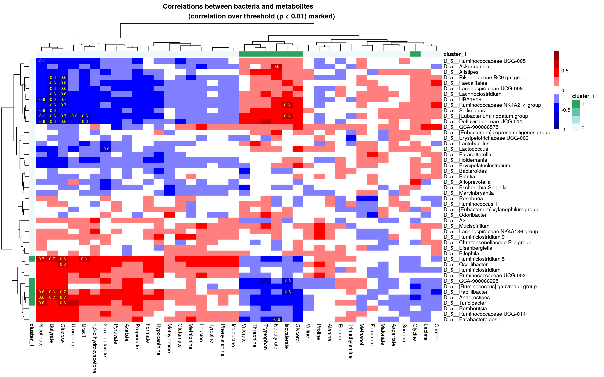

Chapter 7 Cross-correlation & Unsupervised learning
7.1 Cross-correlation
With cross-correlation analysis, we can analyze how strongly and how differently variables are associated between each other. For instance, we can analyze if higher presence of a specific taxon equals to higher levels of a biomolecule.
TASK
Run installation script to load packages into the session
Import HintikkaXO data
Subset microbiota data (rank = “Genus,” prevalence = 0.2, detection = 0.001) (subsetByPrevalentTaxa)
Apply clr-transform to microbiota data and log10-tranform to metabolites data (transformSamples)
Remove uncultured and ambiguous taxa (as it’s hard to interpret their results) ( USE THIS: mae[[1]] <- mae[[1]][-grep(“uncultured|Ambiguous_taxa,” names(mae[[1]])),] )
Calculate cross-correlation between microbiota (clr) and metabolites (log10) (Use show_warnings = FALSE, test_significance = TRUE, and mode = “matrix” as an arguments) (getExperimentCrossCorrelation)
Create a heatmap from cross-correlation matrix pheatmap
7.2 Unsupervised learning
Unsupervised learning is a part of machine learning where we try to find information from unknown data. It is also called data mining. Usually this means finding of clusters, for instance. Cluster refers to group of samples/features that are similar between each other. For example, based on clinical data we can try to find patient groups that have similar response to used drug.
7.2.1 Biclustering
Biclustering is a clustering method, which simultaneously clusters rows and columns. In this example, the aim is to find clusters where subset of taxa share similar pattern over subset of metabolites. In our case, we try to find clusters where taxa and metabolites correlate similarly.
Check more from OMA which has dedicated chapter on biclustering.
# Load package
library(biclust)## Loading required package: MASS## Loading required package: grid##
## Attaching package: 'grid'## The following object is masked from 'package:Biostrings':
##
## pattern## Loading required package: colorspace## Loading required package: lattice# Find biclusters
bc <- biclust(corr$cor, method=BCPlaid(), fit.model = y ~ m,
background = TRUE, shuffle = 100, back.fit = 0, max.layers = 10,
iter.startup = 10, iter.layer = 100, verbose = FALSE)
bc##
## An object of class Biclust
##
## call:
## biclust(x = corr$cor, method = BCPlaid(), fit.model = y ~ m,
## background = TRUE, shuffle = 100, back.fit = 0, max.layers = 10,
## iter.startup = 10, iter.layer = 100, verbose = FALSE)
##
## There was one cluster found with
## 6 Rows and 7 columns# Get biclusters
bicluster_rows <- bc@RowxNumber
bicluster_columns <- bc@NumberxCol
# Convert into data.frames
bicluster_rows <- as.data.frame(bicluster_rows)
bicluster_columns <- as.data.frame(t(bicluster_columns))
# Adjust names of clusters
colnames(bicluster_rows) <- paste0("cluster_", 1:ncol(bicluster_rows))
colnames(bicluster_columns) <- paste0("cluster_", 1:ncol(bicluster_columns))
# Print biclusters for rows
head(bicluster_rows)## cluster_1
## 1 FALSE
## 2 TRUE
## 3 FALSE
## 4 FALSE
## 5 FALSE
## 6 FALSENow, we can add bicluster information into the heatmap that we already made.
# Convert boolean values into numeric
bicluster_columns[ , 1] <- as.numeric(bicluster_columns[ , 1])
bicluster_rows[ , 1] <- as.numeric(bicluster_rows[ , 1])
# Adjust their rownames
rownames(bicluster_columns) <- colnames(corr$cor)
rownames(bicluster_rows) <- rownames(corr$cor)
# Get correlation values that are over thresholds
p_threshold <- 0.01
corr_values <- ifelse(corr$p_adj<p_threshold, round(corr$cor,1), "")
# Create a heatmap
pheatmap(corr$cor,
annotation_col = bicluster_columns,
annotation_row = bicluster_rows,
display_numbers = corr_values,
main = paste0("Correlations between bacteria and metabolites
(correlation over threshold (p < ", p_threshold,") marked)"),
breaks = breaks,
color = colors,
fontsize_number = 8,
number_color = "yellow")